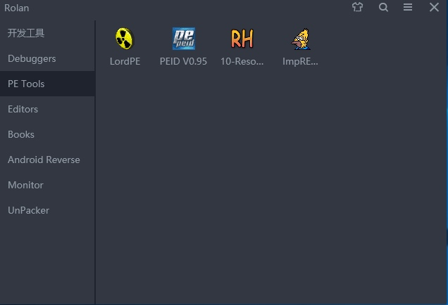

基于微软提供的Win10开发虚拟机环境配置的逆向加开发环境！
微软官网提供了多种Win10开发环境的虚拟机版本下载，我选择的是VMWare版本对其进行扩展，增加了VirtualStudio2017的离线帮助文档、WDK驱动开发环境、RedASM汇编开发IED、JDK、py2/3以及一些简单的Windows逆向工具、Android逆向套装还有夜神模拟器，还有一些常用的手册。
Intro
This evaluation virtual machine includes:
- Windows 10 Fall Creators Update Enterprise Evaluation
- Visual Studio 2017 (Build 15.5) with the UWP, desktop C++, and Azure workflows enabled
- Windows Template Studio extension
- Windows developer SDK and tools (installed as part of VS UWP workflow)
- Windows UWP samples (latest)
- Windows Subsystem for Linux enabled with Ubuntu installed
- Developer mode, bash, and containers enabled
上面环境介绍摘自微软官网，原本微软提供Win10Dev的是英文环境，后来我安装了中文语言包，以及vs2017的中文包都已经设置好了！其中Azure这个东西由于我不会用到，觉得它占空间，所以就移除了！最小化安装了vs2017的C++开发环境，去掉了自带的C#和.net的一些东东！
Dev Tools
- vs2017+驱动开发环境
- RedASM IDE 开发汇编的IDE
- FileCleaner 清理c++项目垃圾
- SourceCounter 代码统计工具
- A1SysTest 用来加载驱动文件
- py和jdk的环境也有！
Debugger Tools
双机调试用到的WinDbg、内存修改工具CE、静态分析IDA6.8/7.0、OD、动态分析OD、x96Dbg、还有OD脚本编写工具
PE Tools

Editor Tools
Books
Android RE Tools
Monitor和Unpacker没什么东西就不贴图了，这个环境主要用来开发以及Android逆向！
Notice
桌面上有个文件
bash.txt里面保存了ubuntu子系统的root账号和密码，以及Rolan的快捷键，我写错了，正确的是Alt+1，VS离线文档的快捷键是Ctrl+F1第二点就是
PEid被Defender干掉了，需要自己重新下载一个！其他就没啥了
Download
百度云： https://pan.baidu.com/s/1mioswcg 密码: 36i3